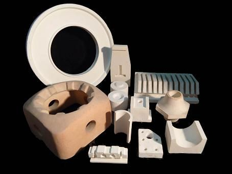

Refractarios Naucalpan S. A. de C. V. es una empresa mexicana dedicada al diseño y fabricación de materiales refractarios. Desde nuestra fundación a principios de los años 90’s, hemos tenido la oportunidad de suministrar nuestros productos a diversas industrias, principalmente la Eléctrica, Petroquímica, Cerámica, Metalúrgica, Siderúrgica y del Vidrio. Gracias a nuestras políticas de calidad y servicio, hoy en día, hemos logrado consolidarnos como uno de los mas importantes proveedores de productos refractarios del país, asumiendo siempre el compromiso de lograr la satisfacción total de nuestros clientes. Nuestros productos son elaborados por personal altamente calificado, utilizando materiales de alta calidad. Más de veinte años de experiencia nos respaldan.
